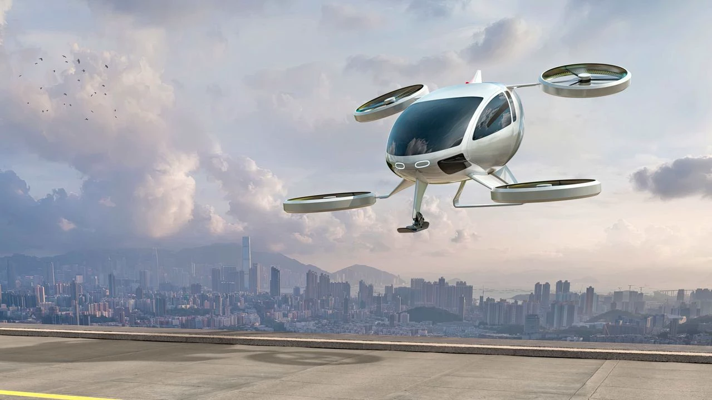

A tecnologia tem desempenhado um papel fundamental na transformação da nossa sociedade e na maneira como vivemos, trabalhamos e nos conectamos. Na atualidade, estamos testemunhando avanços notáveis em várias áreas tecnológicas que estão moldando o nosso mundo de maneiras sem precedentes.
Destaques
Os destaques na tecnologia são avanços, conquistas e eventos notáveis que estão ocorrendo na área da tecnologia e que têm um impacto significativo na sociedade, na indústria e na vida das pessoas. Esses destaques frequentemente representam avanços inovadores e progresso em várias disciplinas tecnológicas.
> Realidade Virtual
A realidade virtual (RV) é uma tecnologia que cria um ambiente simulado por computador que pode ser semelhante ou completamente diferente do mundo real. Ela permite que os usuários mergulhem em ambientes virtuais tridimensionais, onde podem interagir com objetos, pessoas e cenários de maneira imersiva. A RV é alcançada por meio do uso de dispositivos, como óculos de realidade virtual, que rastreiam os movimentos e a posição do usuário para proporcionar uma experiência envolvente.
>Exploração espacial
A exploração espacial é uma área emocionante da tecnologia que envolve a investigação, descoberta e exploração do espaço sideral além da Terra. Desde os primeiros voos espaciais até as missões mais avançadas, a exploração espacial tem desvendado os mistérios do universo e ampliado nosso conhecimento sobre o cosmos.
>Inteligência Artificial (IA) e Aprendizado de Máquina

A Inteligência Artificial (IA) e o Aprendizado de Máquina são dois campos inter-relacionados da tecnologia que têm revolucionado a maneira como as máquinas interagem e aprendem com os dados. Eles têm impulsionado avanços significativos em diversos setores e têm o potencial de moldar o futuro de muitos aspectos da sociedade.
Inovações Tecnológicas
Inovações tecnológicas referem-se a novas ideias, produtos, processos ou serviços que introduzem avanços significativos na forma como a tecnologia é aplicada e utilizada. Essas inovações têm o potencial de transformar setores inteiros, melhorar a qualidade de vida das pessoas e impulsionar o progresso econômico.
>Ameca
Ameca é um humanoide robótico criado pela Engineered Arts. A primeira geração de Ameca foi desenvolvida na sede da Engineered Arts em Falmouth, Cornwall, Reino Unido. O projeto começou em fevereiro de 2021, com o primeiro vídeo revelado publicamente em 1º de dezembro de 2021. Ameca ganhou ampla atenção no Twitter e TikTok antes de sua primeira demonstração pública na CES 2022, onde foi coberto pela CNET e outras agências de notícias. Ameca apresentou uma Mensagem de Natal Alternativa exibida pela emissora de serviço público de televisão britânica Channel 4 no dia de Natal de 2022. Ameca também se juntou à família robótica do Museu do Futuro, onde pode interagir com os visitantes.
>Carros Elétricos
.jpeg)
Revolução dos Carros Elétricos: A adoção de carros elétricos está transformando a indústria automobilística, reduzindo emissões de carbono e promovendo a sustentabilidade. Saiba mais sobre essa inovação.
> Tecnologias Sustentáveis

A tecnologia sustentável dá apoio a um momento desafiador da sociedade contemporânea: quando as consequências do desenvolvimento a qualquer custo das décadas passadas estão visíveis e a necessidade de inovação busca a união com práticas mais eficientes. E não é apenas a degradação do meio ambiente e o aquecimento global que preocupam. A desigualdade econômica e social também são fatores importantes. Afinal, a presença de um negócio impacta a população local e pode contribuir para o seu crescimento. Por isso, os diversos exemplos de tecnologia sustentável estão se destacando nessa nova fase da economia mundial, orientada pelos Objetivos de Desenvolvimento Sustentável (ODS).
O Futuro da Tecnologia
.jpeg)
O Futuro da Tecnologia se refere a como a tecnologia será daqui a alguns anos
>Carros Voadores

Chamados de eVTOLs, eles são parecidos com helicópteros e fazem decolagens e pousos verticais. O 'carro voador', que vai começar a ser fabricado no Brasil, deve ganhar os céus nacionais em breve. A Eve, braço da Embraer que investe no desenvolvimento desses veículos, anunciou nesta quinta-feira que a produção será feita em uma unidade em Taubaté (SP). Na Europa, modelo semelhante já obteve autorização para voar no ano passado.
>Impressão 4D
A impressão 4D recorre as impressoras 3D para criar objetos tridimensionais vivos sem fios nem circuitos. Faz isso utilizando materiais inteligentes, que podem ser programados para mudarem de forma, cor ou tamanho ao receberem um estímulo externo. O MIT (Instituto Tecnológico de Massachusetts) desenvolve a tecnologia de impressão de 4D. A partir de uma impressora 3D, os cientistas do instituto criaram uma técnica capaz de gerar objetos impressos tridimensionalmente e que podem mudar de forma com o tempo. Esse detalhe do efeito do tempo sobre o que é impresso pela máquina é o que define a quarta dimensão do objeto.
>O futuro da inteligencia artificial

De acordo com economistas do banco de investimento Goldman Sachs, até 300 milhões de empregos em todo o mundo poderão ser totalmente automatizados com a adoção da inteligência artificial. Esta previsão está ancorada especialmente naquelas atividades administrativas, que representam cerca de 18% do trabalho global